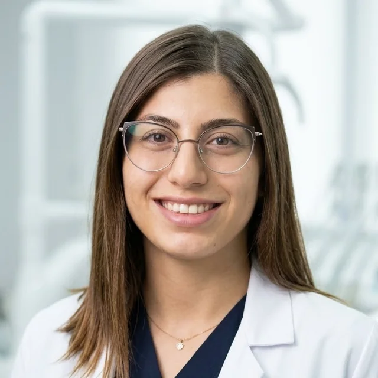

Elif Sayın
Trakya Üniversitesi Diş Hekimliği Fakültesi son sınıf öğrencisiyim. Klinik eğitimimin son yılında; kanıta dayalı, hasta güvenliğini ve doğal dokuların korunmasını önceleyen bir diş hekimliği anlayışıyla mezuniyete hazırlanıyorum.
Edirne

Hakkımda
Merhaba, ben Elif
Diş hekimliği; ince el becerisini, anatomi ve biyomateryal bilgisini ve hastayla kurulan güven ilişkisini aynı anda gerektiren bir meslek. Bu alanı, emeğimin sonucunu doğrudan görebildiğim ve her vakada bilimsel düşünceyi pratiğe dönüştürebildiğim için seçtim.
Beş yıllık eğitimimin klinik döneminde fakültemizin tüm anabilim dallarında hasta başında çalıştım. Bu süreçte teşhis ve planlamanın, uygulamanın kendisi kadar önemli olduğunu; iyi bir sonucun ise doğru endikasyon, titiz bir çalışma düzeni ve hastanın sürece katılımıyla ortaya çıktığını öğrendim.
Klinik dışında düzenli olarak spor ve vücut geliştirme ile ilgileniyorum. Bu disiplin, uzun klinik seanslarında ergonomik çalışabilmem, odağımı korumam ve kendime koyduğum hedeflerde istikrarlı kalabilmem için bana önemli bir zemin sağlıyor. Hayvanlara duyduğum sevgi ise sabır ve empatiyi gündelik hayatımın bir parçası hâline getiriyor.
Eğitim
Eğitim yolculuğum
-
2022 – 2027
Trakya Üniversitesi Diş Hekimliği Fakültesi
Diş Hekimliği Lisans Programı (5 yıl) · Son sınıf
Klinik staj programında tüm anabilim dallarında birinci tur tamamlandı; ikinci tur sürüyor. Beklenen mezuniyet: Haziran 2027.
-
Ortaöğretim
Tekirdağ Anadolu Lisesi
Fen ve matematik ağırlıklı ortaöğretim; diş hekimliği eğitimine hazırlık.
Klinik Eğitim
Klinik stajlarım
Dördüncü ve beşinci sınıfta yürütülen klinik stajlarda, anamnez ve klinik değerlendirmeden teşhis, tedavi planlaması ve uygulamaya kadar her aşamada aktif olarak görev aldım. Birinci staj turunu tüm anabilim dallarında tamamladım; 2026–2027 eğitim-öğretim yılında ikinci turu sürdürüyorum.
- Ağız, Diş ve Çene Cerrahisi
- Ağız, Diş ve Çene Radyolojisi
- Endodonti
- Ortodonti
- Pedodonti
- Periodontoloji
- Protetik Diş Tedavisi
- Restoratif Diş Tedavisi
Klinik uygulamalar, fakültemiz öğretim üyelerinin gözetiminde ve eğitim amacıyla yürütülmektedir.
Diller
Dil yeterliliği
- TürkçeAna dil
- İngilizceÖSYM TıpDil — 70 puan (2026). Mesleki literatürü ve uluslararası bilimsel yayınları İngilizce takip edebiliyorum.
İletişim
Bana ulaşın
Akademik çalışmalar, kongre ve kurs davetleri, staj ve gönüllülük olanakları için e-posta ya da LinkedIn üzerinden ulaşabilirsiniz.
Bu site kişisel ve akademik tanıtım amaçlıdır; hasta kabulü ya da sağlık danışmanlığı yapılmamaktadır.